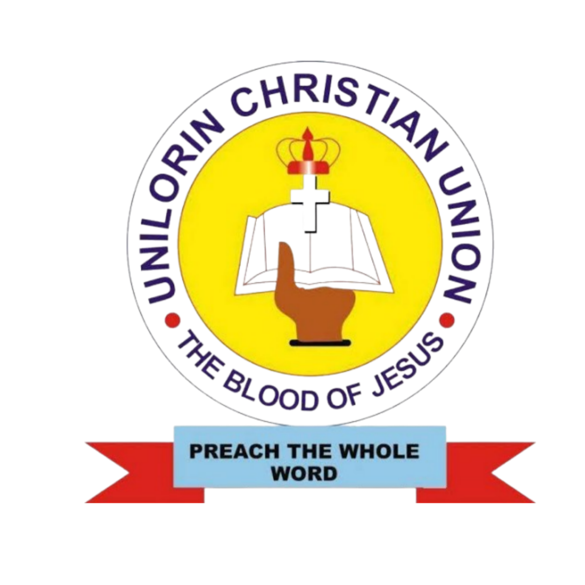

Sunday 6:00 PM
Sunday Worship Service
Come together for worship, teaching, prayer, and fellowship.
⌖ Chapel of the Light

PREACH AND REIGN!
The Christian Union is the campus-wide, interdenominational fellowship of students at Unilorin. Whatever faculty, level, or background you come from, there is a seat here with your name on it.
Plan your first visit →FOUNDED
STUDENTS REACHED
ACTIVE UNITS
FACULTIES REACHED
Come as you are, come alone or come with your roommate. Nothing to register for and nothing to pay.
Come together for worship, teaching, prayer, and fellowship.
We pray, then we go out two by two to take the Gospel of our Lord to the world.
A time set apart/dedicated to seek the face of God in prayers, intercession, and also for our spiritual growth.
Dig deeper into God's Word and learn how to apply it to everyday life.
Our Annual Programs
Days when the entire Christian body on Campus(UCFA, JCCF and UCU) Comes together to bring down the presence of God on Campus. Days of teaching from guest ministers, Impartation and Prayers. One of The biggest events on our calendar.
To teach and raise young believers on the Basic Doctrine of the Christian Faith, that everyone of us will be equipped and made Perfect. Col.1.28 - "Whom we preach, warning every man, and teaching every man in all wisdom; that we may present every man perfect in Christ Jesus:[KJV]"
The Weekend Of Teaching is a weekend when we gather together as a household to have an in depth study of God's word for the season/Tenure,
Also a guest minister who can rightly divide the word of truth is invited for the teaching
A Day dedicated purely for intensive prayers, intercession and seeking God's face together as a campus family.
Love Feast is a day when we gather together as a household to share, connect, and celebrate the love of Christ. It is a time of fellowship, fun, food, and meaningful interaction with one another, strengthening the bond of love and unity within the household.
A day when we come together to discuss academics as a believer, there is an appropriate way students should act when it comes to academics, likewise there is also a way we as believers should act and behave in when it comes to our academics.
The Last dance: Celebrating the End of Session with Singspiration, There’s something about the last day of the session. The exams are over, the books are closed, and the anticipation of a break fills the air. At UCU, we celebrate this moment with a program we love: Singspiration. This isn't your average event. It's a day filled with the vibrant energy of an amazing oasis choir, who have practiced for weeks, well prepared to pour out their souls. The music is uplifting, the dancing is joyful, and the presence of the Lord is palpable. It’s our way of closing the chapter with a shout to the Lord a day of loud singing, powerful dancing, and a profound ministration of God’s Word. If you are looking for a reason to smile, a reason to dance, and a reason to be thankful, Singspiration is the place to be.
This is the CRUX of the Tenure, when we put to practice everything we've learned in the tenure, when we all go into places as the Lord directs(villages, outreaches), to preach the gospel. THE BIGGEST EVENT ON OUR CALENDAR
It considers the strengths of the author's message, the biblical truths presented, and how the lessons can be applied in the church and in everyday life.This review is an invitation to read, reflect, and apply the truths contained in the book for personal spiritual development and a stronger Christian life.
A Week long event dedicated for Evangelism, with Sunday of Orientation, Monday for Immersive Evangelism, Tuesday for intercessions, Thursday for film show, Friday for Outreaches.
Listen to our latest messages directly below, or subscribe to our channel on Spotify to stay updated on new releases.
A glimpse into our special programmes, retreats, and gatherings this year.


Access our digital library of Christian literature, study guides, and spiritual growth books available on Google Drive.
Browse our full collection of books, articles, and study materials updated regularly.
Essential reading material for new believers and growing disciples.
Read / Download →Books and materials focused on prayer, fasting, and spiritual awakening.
Read / Download →Resources on balancing spiritual life with academic excellence on campus.
Read / Download →